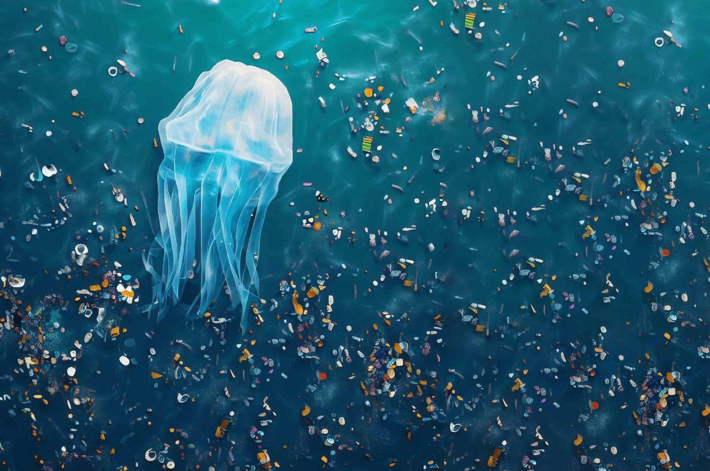
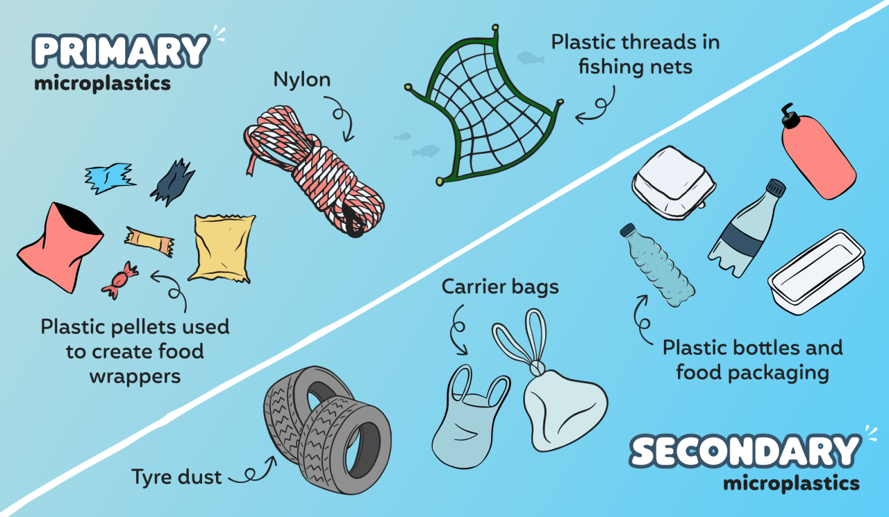
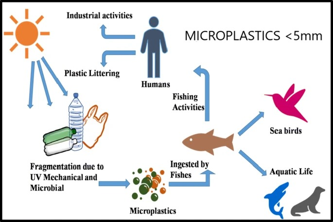
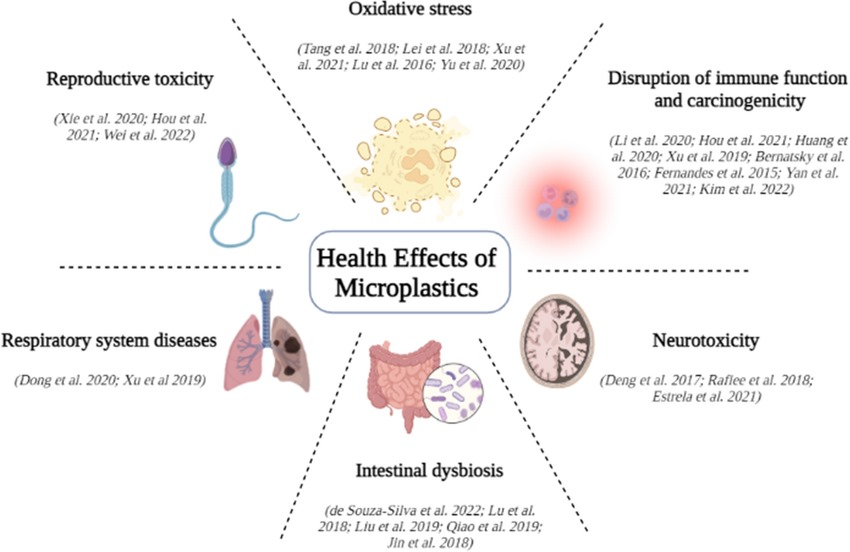
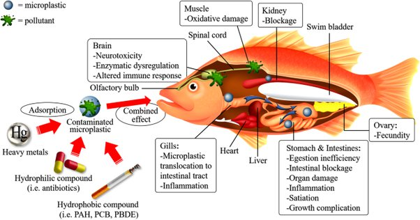
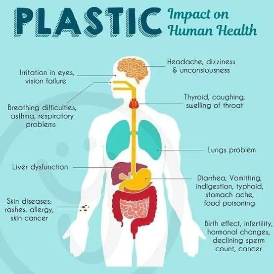
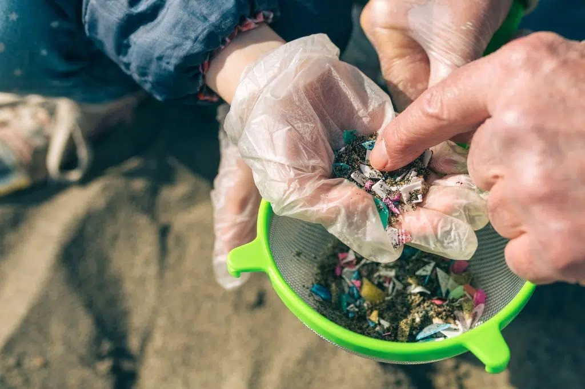

Monitoring Microplastic in Water Bodies
Definition: What are microplastics?

Micro means extremely small. And we all know what plastic means.
So, when you break it down, microplastics can be defined as
minuscule pieces of plastic debris. Most commonly known as a
consequence of plastic pollution, microplastics are less than five
millimetres in diameter. This is only four times as wide as a
single grain of sand. Its also 0.003% the height of Danny DeVito.
Who knew?
Labelling microplastics as tiny pieces of plastic is, of course, an all-too-simplified definition. A bit like calling Harry Styles “that bloke off X Factor”. Or Game of Thrones Joffrey “a bit of a nuisance”.
They may be mini, but they have a huge impact on the environment, releasing toxins into our soil, air, and water. But more on that later.
Labelling microplastics as tiny pieces of plastic is, of course, an all-too-simplified definition. A bit like calling Harry Styles “that bloke off X Factor”. Or Game of Thrones Joffrey “a bit of a nuisance”.
They may be mini, but they have a huge impact on the environment, releasing toxins into our soil, air, and water. But more on that later.
Types of microplastics
There are two types of microplastics:
- Secondary
- Primary
Secondary microplastics are the more well-known villains of the MCU (or what we like to call, the microplastic-contaminated universe). These are created as a result of plastic pollution when larger plastics break down over time.
Examples of primary microplastics

Micro means extremely small. And we all know what plastic means.
So, when you break it down, microplastics can be defined as
minuscule pieces of plastic debris. Most commonly known as a
consequence of plastic pollution, microplastics are less than five
millimetres in diameter. This is only four times as wide as a
single grain of sand. Its also 0.003% the height of Danny DeVito.
Who knew?
- Plastic microfibres in nylon y
- Tiny plastic threads in fishing nets
- Plastic pellets used to create food wrappers. These are known as nurdles (not to be confused with the popular daily word game that took over our lives in 2022). Up to 23 billion nurdles end up in the ocean each day from the EU alone.
The Microplastic Cycle

The microplastic cycle involves several stages:
- Emission: Microplastics enter the environment through various pathways, including the fragmentation of larger plastic items, the shedding of microfibers from textiles during use and washing, the release of microbeads from personal care products, and the spillage of plastic pellets during manufacturing and transportation.
- Transport: Once released into the environment, microplastics can be transported through air currents, surface runoff, rivers, and ocean currents. This transport can lead microplastics to travel long distances from their original sources and become distributed throughout terrestrial and aquatic ecosystems.
- Accumulation: Microplastics accumulate in different environmental compartments, including soil, sediment, water bodies, and biota. In aquatic environments, microplastics may settle into sediments or float on the water surface, where they can be ingested by aquatic organisms or interact with biotic and abiotic components of the ecosystem.
- Bioaccumulation: Microplastics can be ingested by organisms at various trophic levels, from plankton to apex predators. Through bioaccumulation and biomagnification processes, microplastics and associated contaminants can become concentrated in the tissues of organisms, potentially leading to adverse effects on individual health and ecosystem functioning.
- Degradation: Microplastics can undergo physical, chemical, and biological degradation processes in the environment. While microplastics are resistant to degradation compared to natural materials, factors such as UV radiation, mechanical abrasion, and microbial activity can fragment microplastics into smaller particles over time.
- Secondary Sources: Once fragmented, microplastics can serve as secondary sources of pollution, releasing smaller particles and potentially harmful chemicals back into the environment. These secondary microplastics can contribute to ongoing pollution and perpetuate the microplastic cycle.
Microplastics and Their Effects

Microplastics can have significant effects on aquatic life and potentially impact public health as well:

Aquatic Life: Microplastics can be ingested by a wide range of aquatic organisms, including
fish, shellfish, seabirds, and marine mammals. These organisms may mistake microplastics for food, leading
to ingestion and subsequent health issues. Ingested microplastics can cause physical harm, such as blockages
or damage to the digestive tract, as well as leaching of toxic chemicals that can interfere with biological
processes and disrupt hormonal balances. This can lead to reduced growth, reproductive issues, and even
death in affected animals. Furthermore, microplastics can also serve as vectors for harmful microorganisms,
potentially increasing the spread of diseases among aquatic organisms.

Public Health: While the direct impact of microplastics on human health is still being
researched, there is growing concern about the potential risks. Microplastics can enter the human body
through various pathways, including ingestion of contaminated seafood, inhalation of airborne particles, and
ingestion of food and water containing microplastics. Once inside the body, microplastics can accumulate and
may cause inflammation, oxidative stress, and potentially disrupt cellular processes. Additionally,
microplastics have the ability to absorb and concentrate toxic chemicals from the surrounding environment,
and there is concern that these chemicals could be released within the body, posing additional health risks.
Studies are ongoing to better understand the extent of human exposure to microplastics and their potential
health effects.
Overall, addressing the issue of microplastic pollution is important not only for the health of aquatic ecosystems but also for safeguarding public health. Efforts to reduce plastic waste, improve waste management practices, and develop alternative materials that are less harmful to the environment are essential steps in mitigating the impacts of microplastics on both aquatic life and human health.
Monitoring Microplastics in Water Bodies and Their Effects

Monitoring microplastics in water bodies and their effects on aquatic life involves a multi-faceted approach
that combines various sampling methods, analytical techniques, and ecological assessments.
Here are some steps and techniques commonly used for monitoring microplastics in aquatic environments:
- Sampling Design: Designing an effective sampling strategy is crucial for accurately assessing microplastic pollution in water bodies. This involves selecting sampling sites that represent different aquatic ecosystems (e.g., rivers, lakes, coastal areas), considering factors such as proximity to potential pollution sources and variability in environmental conditions. Sampling frequency and duration should also be determined to capture temporal variations in microplastic abundance.
- Water Sampling: Collecting water samples is the primary method for assessing microplastic contamination in aquatic environments. Samples can be collected using various methods, including surface water grabs, sediment grabs, and water column sampling using nets or pumps. Sampling equipment should be carefully chosen to avoid contamination and ensure representative sampling.
- Sediment Sampling: Sediment serves as a sink for microplastics, with high concentrations often found in the bottom layers of water bodies. Sediment sampling involves collecting samples from the bed of rivers, lakes, and oceans using corers or grab samplers. Sediment cores can be sectioned to analyze microplastic distribution with depth.
- Biological Sampling: Assessing the ingestion of microplastics by aquatic organisms provides insights into their exposure and potential impacts. This can be done by collecting organisms such as fish, shellfish, and plankton and analyzing their gastrointestinal tracts for microplastic presence. Tissue samples can also be examined for microplastic accumulation.
- Microplastic Extraction: Once collected, samples are processed to extract microplastics for analysis. This typically involves filtration, density separation, and digestion techniques to isolate microplastics from organic matter and sediment particles.
- Microplastic Analysis: Microplastics extracted from water, sediment, and biological samples are then characterized and quantified using analytical techniques such as microscopy, spectroscopy, and chromatography. Microscopy techniques, including optical microscopy and scanning electron microscopy, are commonly used to identify and measure microplastic particles. Spectroscopic methods such as Fourier-transform infrared spectroscopy (FTIR) and Raman spectroscopy can provide information about the chemical composition of microplastics.
- Ecological Assessments: In addition to assessing microplastic abundance, monitoring programs may also include ecological assessments to evaluate the effects of microplastics on aquatic life and ecosystem health. This can involve monitoring changes in biodiversity, population dynamics, and ecosystem functioning in microplastic-affected environments.
How to Get Rid of Microplastics?
Getting rid of microplastics is incredibly difficult and expensive. It’s like finding a needle in a
haystack, if the needle was the width of a strand of hair and the haystack was the ocean. And most
techniques to “get rid of” microplastics only actually filter and separate them, rather than eliminating
them entirely. This results in microplastic leftovers that continue to pollute food chains and ecosystems
elsewhere.
Scientists are working on methods to destroy microplastics, without creating or needing pollutant chemicals. Electrolytic oxidation, for example, uses electrodes to attack microplastics. However, despite being reusable, these electrodes don’t come cheap.

Scientists are working on methods to destroy microplastics, without creating or needing pollutant chemicals. Electrolytic oxidation, for example, uses electrodes to attack microplastics. However, despite being reusable, these electrodes don’t come cheap.
How to Avoid Microplastics?
It’s much easier to avoid microplastics than it is to destroy them. In the same way it’s easier to avoid
stepping in dog poo than it is to clean it off your shoe.
20 tips for avoiding microplastics:
20 tips for avoiding microplastics:
- Buy your fresh milk in returnable glass bottles (rather than single-use plastic)
- Get an eco-friendly, plastic-free water filter for your tap water
- Use reusable shopping bags rather than plastic ones
- Buy organic clothes free from synthetic polymers and plastics
- Make the most of plastic-free cosmetics like reusable makeup wipes
- Swap your shower gels and shampoos for plastic-free, sustainable bars
- Use eco-friendly alternatives to clingfilm and don’t microwave food in plastic Tupperware
- Air dry your clothes
- Freeze food in beeswax wraps rather than plastic
- Buy fruit and veg in home-compostable, recyclable paper bags
- Use your washing machine less by only putting on full loads
- Get bread and pastries in paper bags (and put an end to single-use plastic containers!)
- Carry a reusable water bottle and coffee cup with you to avoid takeaway cups
- Store food in plastic-free containers (like ones made of glass or metal)
- Cut down on the amount of seafood you eat (scientists estimate up to 30% of fish are contaminated with microplastics)
- Take public transport when you can (to avoid your car’s tyres wearing down and creating more microplastic pollution)
- Use microfibre filters and laundry bags to prevent microplastics from entering wastewater
- Streamline your wardrobe (check out the best apps for selling used clothes if you need help doing this!)
- Use air filters and regularly hoover your house to prevent microplastic dust particles
- Join our milkround to avoid single-use plastic (as well as pesky trips to the shop and food waste!)